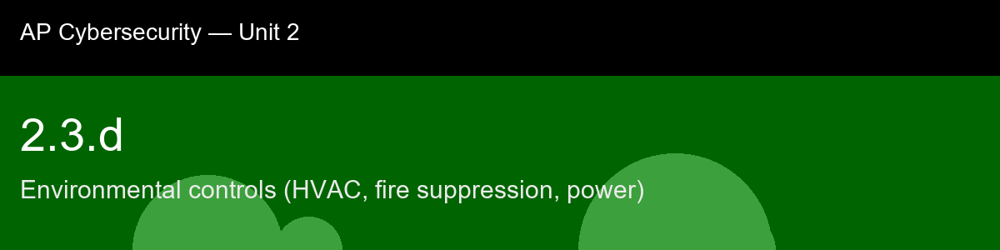

2.3.d recap, Environmental controls (HVAC, fire suppression, power)
Nice work today. Here's what to lock in:
- Recap handout:
post-lecture-handout.docx
- Simulation: SimLab
- Self-check quiz: due before next class
The big picture: The detail worth carrying forward is that every environmental control in this skill is really a timing problem in disguise. A UPS doesn't need to run for hours, it needs to bridge milliseconds until a generator, which itself needs seconds to stabilize, takes over. A VESDA system's entire value is in giving minutes of warning instead of seconds. Clean-agent suppression only works if the room stays sealed for the length of the discharge. None of these controls are about brute strength; they're about buying exactly enough time for the next layer to activate before the last one runs out, which is defense-in-depth expressed as a countdown clock instead of a wall.
Key terms to lock in:
- HVAC, Heating, Ventilation, and Air Conditioning; the system that maintains temperature and humidity within safe operating ranges for hardware.
- Hot aisle / cold aisle, A data center rack layout that separates cool intake air from hot exhaust air to maximize cooling efficiency and prevent hot spots.
- Clean agent, A gaseous fire suppressant (such as FM-200 or NOVEC 1230) that extinguishes fire without leaving residue or damaging electronic equipment.
- UPS (Uninterruptible Power Supply), A battery-backed device that provides immediate clean power during outages or power quality events, bridging the gap until a generator starts.
- PDU (Power Distribution Unit), A device that distributes electrical power to multiple rack components; managed PDUs support remote monitoring and outlet control.
- VESDA, Very Early Smoke Detection Apparatus; a system that continuously samples air and detects smoke at extremely low concentrations, providing early warning before a fire develops.
- Brownout, A condition where utility voltage drops below nominal, causing hardware instability without a full outage.
Common misconceptions -- don't fall for these:
- Sprinkler systems are fine for data centers -> Water damages electronics on contact and even a false activation can destroy an entire room; clean-agent suppression is the appropriate choice for most data center spaces.
- UPS units are only needed for long outages -> A UPS is most critical for the first few milliseconds to seconds of an outage, before a generator can start; it also filters everyday power quality problems that would otherwise cause silent corruption.
- Cold is always safer than warm for servers -> Temperatures below 15 C increase condensation risk and ESD from dry air, and can mechanically stress some components; the safe window has a lower bound as well as an upper bound.
Learning objective(s): 2.3.C

## 2.3.d recap, Environmental controls (HVAC, fire suppression, power)
Nice work today. Here's what to lock in:
- Recap handout: `post-lecture-handout.docx`
- Simulation: SimLab
- Self-check quiz: due before next class
**The big picture:** The detail worth carrying forward is that every environmental control in this skill is really a *timing* problem in disguise. A UPS doesn't need to run for hours, it needs to bridge milliseconds until a generator, which itself needs seconds to stabilize, takes over. A VESDA system's entire value is in giving minutes of warning instead of seconds. Clean-agent suppression only works if the room stays sealed for the length of the discharge. None of these controls are about brute strength; they're about buying exactly enough time for the next layer to activate before the last one runs out, which is defense-in-depth expressed as a countdown clock instead of a wall.
**Key terms to lock in:**
- **HVAC**, Heating, Ventilation, and Air Conditioning; the system that maintains temperature and humidity within safe operating ranges for hardware.
- **Hot aisle / cold aisle**, A data center rack layout that separates cool intake air from hot exhaust air to maximize cooling efficiency and prevent hot spots.
- **Clean agent**, A gaseous fire suppressant (such as FM-200 or NOVEC 1230) that extinguishes fire without leaving residue or damaging electronic equipment.
- **UPS (Uninterruptible Power Supply)**, A battery-backed device that provides immediate clean power during outages or power quality events, bridging the gap until a generator starts.
- **PDU (Power Distribution Unit)**, A device that distributes electrical power to multiple rack components; managed PDUs support remote monitoring and outlet control.
- **VESDA**, Very Early Smoke Detection Apparatus; a system that continuously samples air and detects smoke at extremely low concentrations, providing early warning before a fire develops.
- **Brownout**, A condition where utility voltage drops below nominal, causing hardware instability without a full outage.
**Common misconceptions -- don't fall for these:**
- Sprinkler systems are fine for data centers -> Water damages electronics on contact and even a false activation can destroy an entire room; clean-agent suppression is the appropriate choice for most data center spaces.
- UPS units are only needed for long outages -> A UPS is most critical for the first few milliseconds to seconds of an outage, before a generator can start; it also filters everyday power quality problems that would otherwise cause silent corruption.
- Cold is always safer than warm for servers -> Temperatures below 15 C increase condensation risk and ESD from dry air, and can mechanically stress some components; the safe window has a lower bound as well as an upper bound.
**Learning objective(s):** 2.3.C